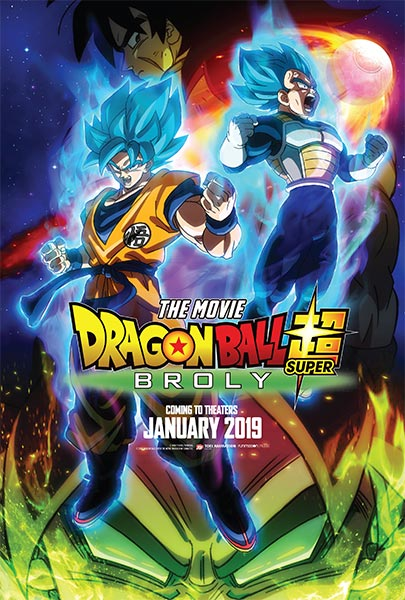

Titulo: Grisaia: Phantom Trigger
Sinopsi: se lleva a cabo después de la trilogía de Grisaia, y presenta un grupo completamente nuevo de heroínas, así como un nuevo protagonista. La historia sigue a una clase de estudiantes de la Academia Mihama, que ha sido convertida por la organización antiterrorista CIRS en una «escuela de capacitación especializada» para una nueva generación de operativos.
Género:Acción | Escolares
Director: Tensho
Elenco: Maaya Uchida, Ayane Sakura, Kaori Nazuka, Atsumi Tanezaki, Yoshino Nanjo, Mikako Izawa, Tsubasa Yonaga
Titulo:Los siete pecados capitales: Prisioneros del cielo
Sinopsi: Los siete pecados capitales hacen un viaje al Templo del Cielo en busca de un elusivo ingrediente conocido como "pez celestial".
Género:Animación | Acción | Fantasía
Director: Yasuto Nishikata, Noriyuki Abe
Elenco: Yûki Kaji, Sora Amamiya, Misaki Kuno, Aoi Yûki, Tatsuhisa Suzuki, Jun Fukuyama, Yûhei Takagi, Maaya Sakamoto, Tomokazu Sugita, Tsubasa Yonaga
Titulo: Mahouka Koukou no Rettousei
Sinopsi: Las estaciones pasan y la primavera está muy cerca. El hermano “irregular” o poco talentoso y su brillante y hermosa hermana están por terminar el primer año de preparatoria en la Primer Escuela de Magia. Tatsuya, Miyuki y compañía deciden tomar un descanso aprovechando las vacaciones de primavera en una villa en isla Ogasawara. Todo es diversión hasta que una misteriosa chica llamada Kokoa aparece frente a ellos. Ella es una fugitiva de la Base Naval con un solo deseo... ¿Cuál es el deseo de la misteriosa chica? ¿Qué aventuras les esperan a Tatsuya y compañía?
Género:AcciónCiencia | Ficción | Magia | Sobrenatural
Director: Manabu Ono, Masaki Matsumura, Tamaki
Elenco:
Titulo: Fairy Tail Dragon Cry
Sinopsi: Dragon Cry, un poderoso artefacto mágico capaz de destruir al mundo ha sido robado. Zash traidor al Reino de Fiore lo ha entregado al Reino de Stella. Natsu y los Magos del Gemio de Fairy Tail tendrán que recuperar este místico objeto antes de que sea demasiado tarde ¿Qué peligros los esperan?
Género: Acción | Aventuras | Comedia | Fantasía | Magia | Shounen
Director:
Elenco:Tetsuya Kakihara, Aya Hirano, Rie Kugimiya, Yuichi Nakamura, Sayaka Ōhara, Satomi satō, Yui Horie, Makoto Furukawa, Aoi Yūki, Jiro Saito, Chiaki Takahashi, Ryōta Takeuchi, Taku Yashiro,
Titulo: El canto del lobo
Sinopsi: La oscura amenaza de una guerra nuclear aumenta descontroladamente. Lo único que se interpone en el camino de la destrucción son los oídos expertos de un tripulante de submarino.
Género:Acción | Drama
Director: Abel Lanzac
Elenco:François Civil, Omar Sy, Mathieu Kassovitz, Reda Kateb, Paula Beer, Alexis Michalik, Jean-Yves Berteloot, Damien Bonnard, Pierre Cevaer, Sébastien Libessart
Titulo: Mustang: La rehabilitación
Sinopsi: Roman Coleman, un convicto violento, recibe la oportunidad de participar en un programa terapéutico de rehabilitación que consiste en el entrenamiento de caballos salvajes.
Género:Drama
Director: Laure de Clermont-Tonnerre
Elenco: Matthias Schoenaerts, Jason Mitchell, Bruce Dern, Gideon Adlon, Connie Britton, Josh Stewart, Thomas Smittle, Keith Johnson, Noel Gugliemi
Titulo: A dos metros de ti
Sinopsi: Un par de adolescentes con fibrosis quística se conocen en un hospital y se enamoran, aunque su enfermedad signifique que deben evitar el contacto físico.
Género: Drama | Romance
Director: Justin Baldoni
Elenco: Haley Lu Richardson, Cole Sprouse, Moises Arias, Kimberly Hebert Gregory, Parminder Nagra, Claire Forlani, Emily Baldoni, Gary Weeks, Cynthia Evans

Titulo: Dragon Ball Super: Broly
Sinopsi: Goku y Vegeta se encuentran con Broly, un poderoso guerrero Saiyajin, muy diferente a cualquier otro luchador que hayan enfrentado anteriormente.
Género:Animación | Acción | Aventura
Director: Tatsuya Nagamine
Elenco: Masako Nozawa, Aya Hisakawa, Ryô Horikawa, Toshio Furukawa, Takeshi Kusao, Ryûsei Nakao, Kôichi Yamadera, Masakazu Morita, Ryûzaburô Ôtomo
Titulo: My Hero Academia: Two Heroes
Sinopsi: All Might y Deku aceptan una invitación para visitar una ciudad flotante llamada I Island donde conocen a una chica y pelean contra un villano que tiene a toda la isla de rehén.
Director: Kenji Nagasaki
Elenco:Justin Briner, Christopher Sabat, Ray Chase, Erica Mendez, Keith Silverstein, Brina Palencia, Caitlin Glass, Barry Yandell, J. Michael Tatum
Titulo: La Tierra errante
Sinopsi: Debido a que el Sol está muriendo, la gente de todo el mundo construye gigantes propulsores planetarios para navegar La Tierra hasta un nuevo sistema estelar. Pero el largo viaje está lleno de peligros inesperados.
Género: Drama | Ciencia ficción
Director: Frant Gwo
Elenco: Jing Wu, Chuxiao Qu, Guangjie Li, Man-Tat Ng, Jin Mai Jaho, Mike Kai Sui, Hongchen Li, Jingjing Qu, Yichi Zhang, Haoyu Yang, Zhigang Jiang, Huan Zhang
Titulo: Venganza bajo cero
Sinopsi: Nels, conductor de quitanieves en un pueblo en las Rocallosas, debe abandonar su tranquila vida en la montaña para obtener su venganza contra los narcotraficantes que mataron a su hijo.
Género: Acción | Crimen | Drama
Director: Hans Petter Moland
Elenco: Liam Neeson, Laura Dern, Micheál Richardson, Michael Eklund, Bradley Stryker, Wesley MacInnes, Tom Bateman, Domenick Lombardozzi, Nicholas Holmes, Jim Shield
Titulo: Dragged Across Concrete
Sinopsi: Dos policías demasiado bruscos quedan suspendidos de la fuerza policial. Ahora, con poco dinero y sin otras opciones, deben adentrarse en el mundo criminal para obtener su compensación apropiada.
Director: S. Craig Zahler
Elenco: Mel Gibson, Vince Vaughn, Tory Kittles, Michael Jai White, Thomas Kretschmann, Jennifer Carpenter, Laurie Holden, Don Johnson, Udo Kier, Fred Melamed
Titulo: Feliz día de tu muerte 2
Sinopsi: Tree Gelbman descubre que morir una y otra vez fue sorprendentemente fácil comparado con los peligros que se aproximan cuando Ryan, el compañero de cuarto de Carter, afirma que está reviviendo el mismo día una y otra vez.
Género: Drama | Terror | Misterio
Director: Christopher Landon
Elenco: Jessica Rothe, Israel Broussard, Phi Vu, Suraj Sharma, Sarah Yarkin, Rachel Matthews, Ruby Modine, Steve Zissis, Charles Aitken, Laura Clifton, Missy Yager
Titulo: Destrucción
Sinopsi: Cuando era una joven policía, Erin Bell trabajaba de encubierto con una pandilla en California con trágicos resultados. Muchos años después, debe reconectar con la gente involucrada para encontrar paz.
Director: Karyn Kusama
Elenco: Nicole Kidman, Toby Kebbell, Tatiana Maslany, Sebastian Stan, Scoot McNairy, Bradley Whitford, Toby Huss, James Jordan, Beau Knapp, Jade Pettyjohn